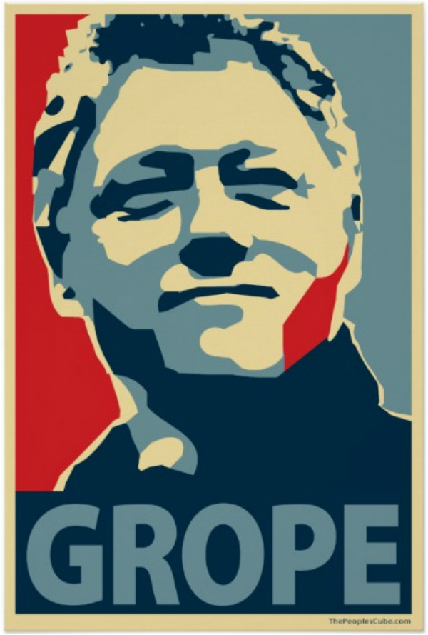

Remixing Obama Hope:
Generating Counterpublic Rhetorics with Mobile Augmented Reality
“The fundamental scandal of the public image is that it is not limited to communicating specific information to a specific audience about a specific event. Instead, the image has more value, wider circulation, and much more to say.”
— Robert Hariman and John Louis Lucaites, The Public Image: Photography and Civic Spectatorship
Shepard Fairey’s iconic Obama Hope poster is one of the most widely circulated and remixed images in recent political history. From its use as an anti-Obama political advertisement to its function as a unifying symbol for transnational protests, Obama Hope has surfaced across a variety of media and genres as a platform for voicing political concerns, proving itself to be a highly adaptable visual icon for galvanizing public response. Obama Hope is “rhetorical” not only because of its persuasive power, as Laurie Gries suggests, but its ability to “organize and maintain collective formation”—to assemble, in other words, a diverse group of people for an even more diverse array of social, cultural, and political ends (11). If we read Gries’ claim about the galvanizing power of public images alongside Michael Warner’s theories of publics and counterpublics, we might say that the kind of circulation demonstrated through Obama Hope is the very rhetorical glue that holds “the public” together as a coherent socio-rhetorical phenomenon.
To organize the collective actions of a disparate group of strangers, public texts must galvanize according to a “transparent and replicable” rhetoric (Warner 423). Communicating messages of hope and progress throughout the 2008 presidential election, Obama Hope was able to generate a transparent and replicable message that, in turn, played a significant role in organizing and maintaining a public of voters who responded to its message of positive political change. However, as the poster’s simple political message and striking visual design combined with an emerging digital delivery network that operates according to a logic of remix and recomposition, it also galvanized public support against Obama, thereby demonstrating how powerful public images can be repurposed as sites of counterpublic resistance. According to Warner, counterpublics are “constituted through a conflictual relation to the dominant public” and therefore must “fashion their own subjectivities around the requirements of public circulation” (423-24). As such, counterpublics often engage in a kind of ad hoc rhetorical strategy by remixing the textual and visual discourses of a perceived dominant public as a way of refining and distributing their own counterpublic messages.
The counterpublics that formed in response to Obama Hope included racist Internet trolls, conservative voters who read the image as socialist propaganda, and even progressive activists who interpreted Obama’s campaign rhetoric as pandering to neoliberal tropes of upward economic mobility1. Although such counterpublics sought to disseminate very different messages about Obama Hope, they were similar in their reliance on visual remix as one of the primary rhetorical strategies for circulating rhetorics of resistance. What we learn from Obama Hope, then, is that although widely circulated public images organize and maintain collective formation of an intended public, they often simultaneously, and unintentionally, galvanize others to repurpose the transparent and replicable message of the image as a foil to support the production of their own counterpublic remixes.
For the purposes of this chapter, I define counterpublic remixes as discourses that reassemble a public text (e.g. a highly televised speech, a company logo, a political slogan, etc.) in order to challenge dominant ideas presented in that text, generate counter messages, and galvanize counterpublic rhetorical action. This notion of counterpublic remixes draws from Frank Farmer’s notion of the rhetorical “bricoleur,” or those who engage in counterpublic rhetoric through “the cobbling together of new things out of old materials” (31). For Farmer, the counterpublic tactics of the bricoleur are both “resistant and constructive,” working to build common public identity through the act of critiquing other public discourses in circulation (34).
In terms of design, counterpublic remixes expose and confront specific contradictions in dominant ideas and representations perceived to be at play within a public text. In doing so, counterpublic remixes are similar to parody, as defined by Barbara Warnick, in that they rely on the viewer’s knowledge of the design aesthetic and public rhetorical function of the source text. As such, creators of counterpublic remixes must also be able to “identify the relevant intertexts that enable a user to be able to understand what is being said” (Warner 105). For instance, many remixes of Obama Hope were published on The People’s Cube, a group blog that satirizes liberals and American democrats through visual and textual play. In 2008, lead blogger Oleg Atbashian remixed Obama Hope by replacing Obama with former president Bill Clinton and replacing the word “Hope” with “Grope” (see Figure 1). In referencing a former democratic president’s marital infidelity and sexual assault allegations, this remixer rejects what he perceives as a dominant idea conveyed in the original Obama Hope design—that the Democratic party stands for social progress and equality and therefore the election of the nation’s first black president is the inevitable culmination of such progress and equality. Simultaneously, this counterpublic remix generates the counter message that Bill Clinton is an amoral figure guilty of sexual harassment and unequal power relations, thereby discrediting not only Clinton but the democratic platform. In addition, such act of counterpublic resistance helps to sustain the blog’s counterpublic rhetorical action by galvanizing blog members to engage in their own satirical recompositions. In response to this Grope poster, for instance, another member created a remix depicting Ralph Nadar that says “No Hope,” while still another uploaded a remix of George W. Bush that said “Cope.” While obviously intended as parody, such counterpublic remixes take on the more serious role of keeping counterpublic discourse and assemblage at play.
Figure 1.
Figure 1: Remixed version of Fairey’s Obama Hope poster featuring Bill Clinton and the words “Grope.”
While methods such as iconographic tracking (see Bratta and Gries chapter) are useful for tracking such counterpublic remixes, in this chapter, I want to demonstrate how marrying a rhetorical methodology with emerging augmented reality technologies is useful for engaging with counterpublic remixes. Augmented reality (AR) technologies make it appear as though digital media files (images, videos, etc.) are overlaid onto one’s view of the physical world. In this chapter, I will be focusing specifically on mobile AR applications, which use the components of a standard smartphone—camera, GPS, accelerometer, etc.—to augment the user’s view of physical reality. By remixing Obama Hope, I specifically want to model for visual studies scholars how AR can function as a viable platform for both analyzing and producing counterpublic remixes of widely circulated public images. Through my own critical making practices, I especially hope to demonstrate how mobile AR can counter “rhetorical isotropy,” a term I use to describe the ways in which public images take on monolithic meanings and associations that could potentially elide more nuanced interpretations of their socio-rhetorical function. Moreover, by creating AR overlays for public images such as Obama Hope, mobile writers can potentially activate what Robert Hariman and John Louis Lucaites refer to as “engaged spectatorship,” or the process of “decontextualizing and recontextualizing in order to engage with different dimensions of the image, different perspectives on what it shows, and different conceptions of its audience” (29). Through AR, mobile writers can accomplish such goals by creating interactive digital overlays that tap into the network of counterpublic discourses that are generated and sustained through the circulation of public images.
My first section makes use of AR to quickly identify and analyze different practices involved in designing counterpublic remixes. Drawing heavily on Dustin W. Edwards’ typologies of remix, I create AR overlays for four remixed versions of the Obama Hope poster, each of which can be defined as an instance of counterpublic remix. In order to establish the rhetorical significance of counterpublic remixes, I then introduce the concept of “isotropic visual rhetorics.” Similar to Jim Ridolfo and Dànielle Nicole DeVoss’s repurposing of the scientific term “velocity” to describe new media delivery practices, I borrow the term “isotropy” from the field of physics to describe the tendency of certain public images to perpetuate entrenched public narratives, which have the potential to drown out alternative counterpublic discourses. I claim that although Obama Hope’s message of racial and political progress helped Obama to secure his presidency, it may have also worked to perpetuate a narrative of post-racial politics that elides some of the criticisms that Obama faced from prominent African-American activists and writers throughout his presidency. My third and final section models how the remix practices first introduced by Edward and identified through AR can be enacted to produce counterpublic remixes and counter this isotropic tendency of public images as well as generate what Robert Hariman and John Lucaites call an “engaged civic spectatorship.”
Ultimately, this chapter claims that if visual studies scholars are going to “do” visual studies in an era of mobile computing, then we must begin to explore and exploit the rhetorical affordances of the various writing technologies—such as AR—that are beginning to emerge alongside mobile devices. However, we must avoid taking up mobile technologies as mere extensions of the logic of prior media forms (i.e. the personal computer). Rather, we must actively engage with the emerging rhetorics that such technologies afford us, such as the ability to remix physical images with digital media overlays. Moreover, in “making” digital counterpublic remixes through emerging mobile technologies like AR, we participate in an invention process not only for the text currently being produced, but for the medium itself. Or, as Sarah Arroyo puts it, “we learn technologies and new technological platforms simply through engaging with them.” Thus, when we create applications of mobile AR for visual studies scholarship, we are simultaneously “inventing” the visual, digital, and rhetorical possibilities of AR.
1. Of course, there were many other counterpublics that formed against Obama Hope. However, a detailed analysis of all counterpublics formed in response to Obama Hope is beyond the purview of this chapter.↩